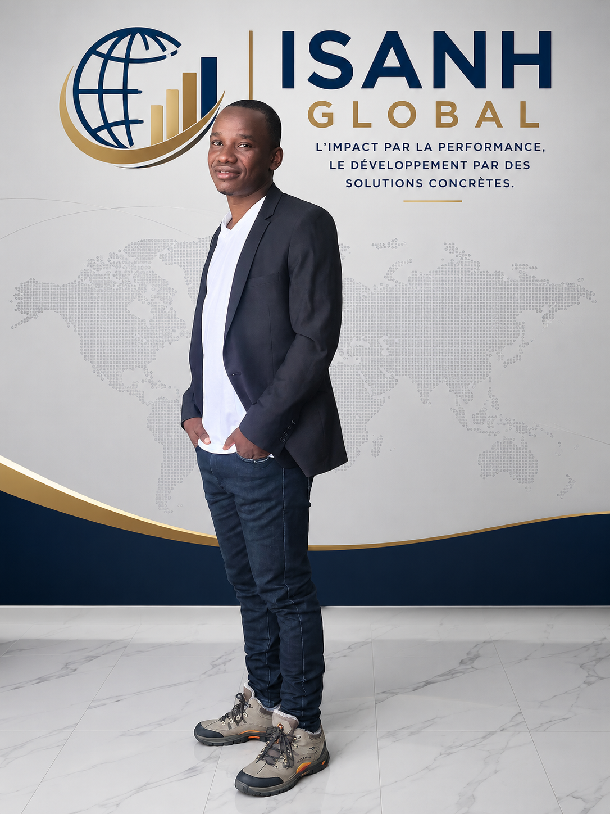

ISANH GLOBAL Née d'une expérience de terrain approfondie, ISANH Global s'engage aux côtés de ses partenaires pour bâtir des résultats solides, mesurables et pérennes. des territoires, institutions et entreprises dans leurs projets de développement. Forte d'une expertise transversale, développement local, appui technico-administratif, formation, commerce et transformation digitale, elle propose des solutions concrètes, conformes aux standards internationaux, pour répondre aux enjeux actuels de gestion et de croissance durable.
1 Objectif Unique
Votre performance
100% Rigueur
Méthodologie stricte
Proximité
Ancré à Manono
Impact Durable
Solutions sur mesure
Nous accompagnons les territoires et communautés vers un développement durable et inclusif.
Conseil, appui et assistance pour une gestion efficace, transparente et conforme aux standards.
Renforcement des capacités à travers des programmes de formation adaptés aux besoins actuels.
Des solutions commerciales innovantes pour connecter les marchés et créer de la valeur.
Intégration des technologies modernes pour optimiser vos processus et performances.
Mon parcours & Vision : Diplômé en gestion des institutions de santé, j'ai passé cinq années au cœur de projets humanitaires et administratifs, où j'ai observé les leviers réels du développement durable. Animé par un esprit entrepreneurial, j'ai choisi de transformer cette expérience de terrain en action : ISANH Global est née pour offrir aux territoires et institutions une expertise complète — développement local, gestion technico-administrative, formation, commerce et transformation digitale — au service de résultats durables.
Nos valeurs : Rigueur :Une gestion transparente et conforme aux standards, à chaque étape de nos interventions. Proximité : Une écoute attentive des besoins réels des communautés et institutions que nous accompagnons. Innovation : L'intégration des outils et technologies modernes pour optimiser durablement la performance. Engagement : Une volonté constante de créer un impact concret et durable sur le terrain..

Analyse approfondie de la situation et identification des besoins réels.
Conception de stratégies sur mesure et feuilles de route claires.
Déploiement opérationnel avec rigueur technique et managériale.
Mesure continue de l'impact et ajustements pour garantir l'excellence.
Une équipe hautement qualifiée possédant une parfaite maîtrise des enjeux sectoriels.
Une transparence totale et un respect strict de l'éthique professionnelle.
Des approches modernes et des outils technologiques pour devancer les défis.
Une capacité d'adaptation et une exécution rapide pour répondre à vos urgences.
Chaque organisation est unique, nos livrables s'adaptent précisément à vos réalités.
Nous restons à vos côtés à chaque étape pour pérenniser les résultats obtenus.